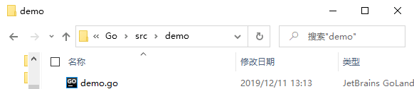
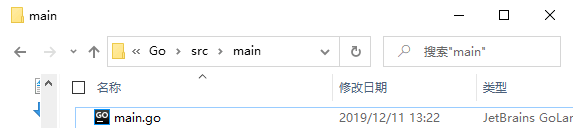

首页 > Go语言 > Go语言包（package）
Go语言自定义包
包是Go语言中代码组成和代码编译的主要方式。关于包的基本信息我们已经在前面介绍过了，本节我们主要来介绍一下如何自定义一个包并使用它。
到目前为止，我们所使用的例子都是以一个包的形式存在的，比如 main 包。在Go语言里，允许我们将同一个包的代码分隔成多个独立的源码文件来单独保存，只需要将这些文件放在同一个目录下即可。
我们创建的自定义的包需要将其放在 GOPATH 的 src 目录下（也可以是 src 目录下的某个子目录），而且两个不同的包不能放在同一目录下，这样会引起编译错误。
一个包中可以有任意多个文件，文件的名字也没有任何规定（但后缀必须是 .go），这里我们假设包名就是 .go 的文件名（如果一个包有多个 .go 文件，则其中会有一个 .go 文件的文件名和包名相同）。
下面通过示例来演示一下如何创建一个名为 demo 的自定义包，并在 main 包中使用自定义包 demo 中的方法。
首先，在 GOPATH 下的 src 目录中新建一个 demo 文件夹 ，并在 demo 文件夹下创建 demo.go 文件，如下所示：
demo.go 文件的代码如下所示：
main.go 文件的代码如下所示：
到目前为止，我们所使用的例子都是以一个包的形式存在的，比如 main 包。在Go语言里，允许我们将同一个包的代码分隔成多个独立的源码文件来单独保存，只需要将这些文件放在同一个目录下即可。
我们创建的自定义的包需要将其放在 GOPATH 的 src 目录下（也可以是 src 目录下的某个子目录），而且两个不同的包不能放在同一目录下，这样会引起编译错误。
一个包中可以有任意多个文件，文件的名字也没有任何规定（但后缀必须是 .go），这里我们假设包名就是 .go 的文件名（如果一个包有多个 .go 文件，则其中会有一个 .go 文件的文件名和包名相同）。
下面通过示例来演示一下如何创建一个名为 demo 的自定义包，并在 main 包中使用自定义包 demo 中的方法。
首先，在 GOPATH 下的 src 目录中新建一个 demo 文件夹 ，并在 demo 文件夹下创建 demo.go 文件，如下所示：

图：demo 文件夹
图：demo 文件夹
demo.go 文件的代码如下所示：
package demo
import (
"fmt"
)
func PrintStr() {
fmt.Println("C语言中文网")
}
然后，在 GOPATH 下的 src 目录中新建一个 main 文件夹，并在 main 文件夹下创建 mian.go 文件，如下所示：

图：main 文件夹
图：main 文件夹
main.go 文件的代码如下所示：
package main
import (
"demo"
)
func main() {
demo.PrintStr()
}
运行结果如下所示：
go run main.go
C语言中文网
- 如果项目的目录不在 GOPATH 环境变量中，则需要把项目移到 GOPATH 所在的目录中，或者将项目所在的目录设置到 GOPATH 环境变量中，否则无法完成编译；
- 使用 import 语句导入包时，使用的是包所属文件夹的名称；
- 包中的函数名第一个字母要大写，否则无法在外部调用；
- 自定义包的包名不必与其所在文件夹的名称保持一致，但为了便于维护，建议保持一致；
-
调用自定义包时使用
包名 . 函数名的方式，如上例：demo.PrintStr()。
关注公众号「站长严长生」，在手机上阅读所有教程，随时随地都能学习。内含一款搜索神器，免费下载全网书籍和视频。

微信扫码关注公众号